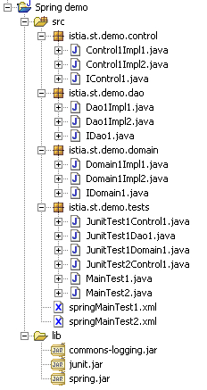

2. 第 1 篇 - Spring IoC
本文的目标：
- 探讨 Spring 框架（http://www.springframework.org）的配置与集成可能性
- 定义并应用 IoC（控制反转）概念，亦称为依赖注入
2.1. 使用 Spring 配置三层应用程序
考虑一个典型的三层应用程序：
我们将假设对业务层和DAO层的访问由Java接口控制：
- 数据访问层的 [IArticlesDao] 接口
- 业务层的 [IArticlesManager] 接口
在数据访问层（即 DAO 层）中，通常需要与数据库管理系统（DBMS）配合使用，因此会用到 JDBC 驱动程序。以下是一个访问 DBMS 中 articles 表的类的基本框架：
| public class ArticlesDaoPlainJdbc implements IArticlesDao {
// connection to data source
private String driverClassName=null;
private Connection connexion=null;
private String url = null;
private String user = null;
private String pwd = null;
....
public List getAllArticles() {
// the list of items is requested
try {
// load the JDBC driver
Class.forName(driverClassName);
// create a connection to BD
connexion = DriverManager.getConnection(url, user, pwd);
...
} catch (SQLException ex) {
...
} finally {
...
}
}
|
要在 DBMS 上执行操作，每个方法都需要一个 [Connection] 对象，该对象代表与数据库的连接，数据将通过该连接在数据库和 Java 代码之间进行交换。要创建此对象，需要以下四项信息：
| DBMS JDBC 驱动程序类的名称 |
| 要使用的数据库的 JDBC URL |
| 用于建立连接的凭据 |
| 该用户名的密码 |
我们之前的 [ArticlesDaoPlainJdbc] 类如何获取此信息？有几种可能：
方案 1 - 该信息硬编码在类中：
| public class ArticlesDaoPlainJdbc implements IArticlesDao {
// connection to data source
private final String driverClassName = "org.firebirdsql.jdbc.FBDriver";
private String url = "jdbc:firebirdsql:localhost/3050:d:/databases/dbarticles.gdb";
private String user = "someone";
private String pwd = "somepassword";
....
|
这种方案的缺点在于，每当这些信息发生变化时（例如更改密码），你都必须修改 Java 代码。
方案 2 - 在对象构造时将信息传递给对象：
| public class ArticlesDaoPlainJdbc implements IArticlesDao {
// connection to data source
private final String driverClassName;
private String url;
private String user;
private String pwd;
....
public ArticlesDaoPlainJdbc(String driverClassName,String url,String user,String pwd) {
this.driverClassName=driverClassName;
this.url=url;
this.user=user;
this.pwd=pwd;
...
}
|
在此，对象在构造时便获得了运行所需的信息。问题便转移到了传递这四项信息的代码上：它是如何获取这些信息的？业务层中的以下类 [ArticlesManagerWithDataBase] 可以从数据访问层构造一个 [ArticlesDaoPlainJdbc] 对象：
| public class ArticlesManagerWithDataBase implements IArticlesManager {
// a data access instance
private IArticlesDao articlesDao;
....
public ArticlesManagerWithDataBase (String driverClassName, String url, String user, String pwd, ...) {
...
// creation of a data access service
articlesDao =(IArticlesDao)new ArticlesDaoPlainJdbc(driverClassName,url,user,pwd);
...
}
public ... doSomething(...){
...
}
}
|
我们可以看到，构建 [ArticlesDaoPlainJdbc] 对象所需的信息再次被传递给了 [ArticlesManagerWithDataBase] 对象的构造函数。我们可以设想，这些信息是由更高层（例如用户界面层）传递给它的。因此，我们逐渐到达了应用程序的最高层。 由于其位置，该层不会被能够向其传递所需配置信息的层所调用。因此，我们必须寻找基于构造函数配置的替代方案。在应用程序最高层进行配置的标准方法是使用一个包含所有可能随时间变化的信息的文件。此类文件可能有多个。在应用程序启动时，初始化层将创建应用程序各层所需的所有或部分对象。
配置文件种类繁多。当前的趋势是使用 XML 文件。Spring 采用的就是这种方法。配置 [ArticlesDaoPlainJdbc] 对象的文件可能如下所示：
| <?xml version="1.0" encoding="UTF-8"?>
<!DOCTYPE beans SYSTEM "http://www.springframework.org/dtd/spring-beans.dtd">
<beans>
<!-- data access class -->
<bean id="articlesDao" class="istia.st.articles.dao.ArticlesDaoPlainJdbc">
<constructor-arg index="0">
<value>org.firebirdsql.jdbc.FBDriver</value>
</constructor-arg>
<constructor-arg index="1">
<value>jdbc:firebirdsql:localhost/3050:d:/databases/dbarticles.gdb</value>
</constructor-arg>
<constructor-arg index="2">
<value>someone</value>
</constructor-arg>
<constructor-arg index="3">
<value>somepassword</value>
</constructor-arg>
</bean>
</beans>
|
应用程序是一组对象，Spring 将其称为 Bean，因为它们遵循 JavaBean 标准，即为对象的私有字段的访问器和初始化器（getter/setter）命名。 应用程序中用于实现特定功能的对象通常以单实例形式创建，这类对象被称为单例（singleton）。因此，在我们此处讨论的多层应用程序示例中，对文章数据库的访问将由 [ArticlesDaoPlainJdbc] 类的单个实例来处理。对于 Web 应用程序，这些服务对象会同时为多个客户端提供服务，而非为每个客户端单独创建一个服务对象。
上面的 Spring 配置文件允许在名为 [istia.st.articles.dao] 的包中创建一个类型为 [ArticlesDaoPlainJdbc] 的服务对象。该对象构造函数所需的四项信息定义在 <bean>...</bean> 标签内。此类 <bean> 标签的数量将与需要创建的单例数量相同。
Spring 配置文件中定义的对象何时会被创建？如果应用程序有 main 方法，则可以通过该方法处理应用程序的初始化。对于 Web 应用程序，这可能是主 Servlet 的 [init] 方法。每个应用程序都有一个保证最先执行的方法。通常，单例的创建就在该方法中进行。
让我们举个例子。假设我们要使用 JUnit 测试来测试前面的 [ArticlesDaoPlainJdbc] 类。JUnit 测试类有一个 [setUp] 方法，该方法会在其他任何方法之前执行。我们将在这里创建 [ArticlesDaoPlainJdbc] 单例。
如果采用通过构造函数传递配置信息的方法，我们将得到如下测试类：
| public class TestArticlesPlainJdbc extends TestCase {
// tests the ArticlesDaoPlainJdbc item access class
// the data source is defined in sprintest
// an instance of the class under test
private IArticlesDao articlesDao;
protected void setUp() throws Exception{
// retrieves a data access instance
articlesDao =
(IArticlesDao) new ArticlesDaoPlainJdbc("org.firebirdsql.jdbc.FBDriver",
"jdbc:firebirdsql:localhost/3050:d:/databases/dbarticles.gdb","someone","somepassword");
}
|
调用类 [TestArticlesPlainJdbc] 必须知道初始化待构建的 [ArticlesDaoPlainJdbc] 单例所需的四项信息。
如果采用通过配置文件传递配置信息的方法，我们可以使用上述 Spring 文件编写如下测试类。
| public class TestSpringArticlesPlainJdbc extends TestCase {
// tests the ArticlesDaoJdbc item access class
// the data source is defined in sprintest
// an instance of the class under test
private IArticlesDao articlesDao;
protected void setUp() throws Exception {
// retrieves a data access instance
articlesDao = (IArticlesDao) (new XmlBeanFactory(new ClassPathResource(
"springArticlesPlainJdbc.xml"))).getBean("articlesDao");
}
|
在此，调用类 [TestSpringArticlesPlainJdbc] 无需了解初始化待构建单例所需的任何信息。它只需知道：
- [springArticlesPlainJdbc.xml]：上述 Spring 配置文件的名称
- [articlesDao]：要创建的单例的名称
除了这两个实体之外，对配置文件的任何修改都不会影响 Java 代码。这种配置应用程序对象的方法非常灵活。为了进行自我配置，应用程序只需知道两件事：
- 包含待创建单例定义的 Spring 文件名称
- 这些单例的名称，Java 代码将通过这些名称获取与配置文件关联的对象引用
2.2. 依赖注入与控制反转
现在，让我们介绍 Spring 用于配置应用程序的依赖注入概念。控制反转（IoC）这一术语也被广泛使用。以我们应用程序业务层中 [ArticlesManagerWithDataBase] 单例的构建为例：
为了从数据库管理系统（DBMS）中获取数据，业务层必须使用一个实现 [IArticlesDao] 接口的对象提供的服务，例如 [ArticlesDaoPlainJdbc] 类型的对象。[ArticlesManagerWithDataBase] 类的代码可能如下所示：
public class ArticlesManagerWithDataBase implements IArticlesManager {
// a data access instance
private IArticlesDao articlesDao;
....
public ArticlesManagerWithDataBase (String driverClassName, String url, String user, String pwd, ...) {
...
// creation of a data access service
articlesDao =(IArticlesDao)new ArticlesDaoPlainJdbc(driverClassName,url,user,pwd);
...
}
public ... doSomething(...){
...
}
}
[ArticlesDaoPlainJdbc] 类应在此处实现 [IArticlesDao] 接口：
public class ArticlesDaoPlainJdbc implements IArticlesDao {...}
为了创建该类正常运行所需的 [IArticlesDao] 单例，其构造函数会显式地使用实现 [IArticlesDao] 接口的类名：
articlesDao =(IArticlesDao) new ArticlesDaoPlainJdbc(...);
因此，代码中存在对类名的硬编码依赖。如果实现 [IArticlesDao] 接口的类发生变更，则需要修改上述构造函数中的代码。对象之间存在以下关系：
[ArticlesManagerWithDataBase] 类会主动创建其所需的 [ArticlesDaoPlainJdbc] 对象。回到“控制反转”这一术语，可以说正是该类掌握着创建所需对象的“控制权”。
如果我们要为 [ArticlesManagerWithDataBase] 类编写一个 JUnit 测试类，它可能会像这样：
| public class TestArticlesManagerWithDataBase extends TestCase {
// an instance of the business class under test
private IArticlesManager articlesManager;
protected void setUp() throws Exception {
// creates an instance of the business class under test
articlesManager =
(IArticlesManager) new ArticlesManagerWithDataBase("org.firebirdsql.jdbc.FBDriver",
"jdbc:firebirdsql:localhost/3050:d:/databases/dbarticles.gdb","someone","somepassword");
}
|
该测试类创建了业务类 [ArticlesManagerWithDataBase] 的实例，该业务类又在其构造函数中创建了数据访问类 [ArticlesDaoPlainJdbc] 的实例。
Spring 的解决方案消除了业务类 [ArticlesManagerWithDataBase] 需要了解其所需数据访问类名称 [ArticlesDaoPlainJdbc] 的需求。这使得在无需修改业务类 Java 代码的情况下，即可更换该类。Spring 支持同时创建两个单例：一个用于数据访问层，另一个用于业务层。Spring 配置文件将定义一个新的 Bean：
| <?xml version="1.0" encoding="UTF-8"?>
<!DOCTYPE beans SYSTEM "http://www.springframework.org/dtd/spring-beans.dtd">
<beans>
<!-- data access class -->
<bean id="articlesDao" class="istia.st.articles.dao.ArticlesDaoPlainJdbc">
<constructor-arg index="0">
<value>org.firebirdsql.jdbc.FBDriver</value>
</constructor-arg>
<constructor-arg index="1">
<value>jdbc:firebirdsql:localhost/3050:d:/databases/dbarticles.gdb</value>
</constructor-arg>
<constructor-arg index="2">
<value>someone</value>
</constructor-arg>
<constructor-arg index="3">
<value>somepassword</value>
</constructor-arg>
</bean>
<bean id="articlesManager" class="istia.st.articles.domain.ArticlesManagerWithDataBase">
<property name="articlesDao">
<ref bean="articlesDao"/>
</property>
</bean>
</beans>
|
新功能是定义将要创建的业务类单例的 Bean：
<bean id="articlesManager" class="istia.st.articles.domain.ArticlesManagerWithDataBase">
<property name="articlesDao">
<ref bean="articlesDao"/>
</property>
</bean>
- 实现 [articlesManager] Bean 的类定义如下：[ArticlesManagerWithDataBase]
- 通过 <property name="articlesDao"> 标签为该 Bean 的 [articlesDao] 字段赋值。这是在 [ArticlesManagerWithDataBase] 类中定义的字段：
| public class ArticlesManagerWithDataBase implements IArticlesManager {
// data access interface
private IArticlesDao articlesDao;
public IArticlesDao getArticlesDao() {
return articlesDao;
}
public void setArticlesDao(IArticlesDao articlesDao) {
this.articlesDao = articlesDao;
}
|
要让 [articlesDao] 字段由 Spring 及其 <property> 标签进行初始化，该字段必须遵循 JavaBean 标准，并且必须存在一个 [setArticlesDao] 方法来初始化 [articlesDao] 字段。 请注意，方法名必须与字段名完全一致。同样地，通常会有一个 [get...] 方法用于获取该字段的值。在此处，即为 [getArticlesDao] 方法。在此新版本中，[ArticlesManagerWithDataBase] 类不再拥有构造函数。它已不再需要构造函数。
- Spring 将为其 [articlesDao] 字段赋予的值，即配置文件中定义的 [articlesDao] Bean 的值：
<bean id="articlesManager" class="istia.st.articles.domain.ArticlesManagerWithDataBase">
<property name="articlesDao">
<ref bean="articlesDao"/>
</property>
</bean>
<bean id="articlesDao" class="istia.st.articles.dao.ArticlesDaoPlainJdbc">
<constructor-arg index="0">
.............
</bean>
- 当 Spring 构建 [ArticlesManagerWithDataBase] 单例时，它也会创建 [ArticlesDaoPlainJdbc] 单例：
- Spring 会建立一个 Bean 的依赖图，并发现 [articlesManager] Bean 依赖于 [articlesDao] Bean
- 它将构建 [articlesDao] Bean，即一个类型为 [ArticlesDaoPlainJdbc] 的对象
- 随后，它将构建类型为 [ArticlesManagerWithDataBase] 的 [articlesManager] Bean
现在，让我们设想一个针对 [ArticlesManagerWithDataBase] 类的 JUnit 测试。它可能如下所示：
| public class TestSpringArticlesManagerWithDataBase extends TestCase {
// test business class [ArticlesManagerWithDataBase]
// an instance of the business class under test
private IArticlesManager articlesManager;
protected void setUp() throws Exception {
// retrieves a data access instance
articlesManager = (IArticlesManager) (new XmlBeanFactory(new ClassPathResource(
"springArticlesManagerWithDataBase.xml"))).getBean("articlesManager");
}
|
让我们来追踪在名为 [springArticlesManagerWithDataBase.xml] 的 Spring 文件中定义的两个单例的创建过程。
- 上方的 [setUp] 方法请求名为 [articlesManager] 的 Bean 的引用
- Spring 会查询其配置文件，找到 [articlesManager] Bean。如果该 Bean 已被创建，则直接返回该对象（单例）的引用；否则，则创建该 Bean。
- Spring 检测到 [articlesManager] Bean 对 [articlesDao] Bean 的依赖。因此，如果 [articlesDao] 尚未作为单例创建，它将创建类型为 [ArticlesDaoPlainJdbc] 的 [articlesDao] 单例。
- 它会创建类型为 [ArticlesManagerWithDataBase] 的 [articlesManager] 单例
该机制可绘制如下图所示：
让我们回顾一下 [ArticlesManagerWithDataBase] 类的框架：
| public class ArticlesManagerWithDataBase implements IArticlesManager {
// data access interface
private IArticlesDao articlesDao;
public IArticlesDao getArticlesDao() {
return articlesDao;
}
public void setArticlesDao(IArticlesDao articlesDao) {
this.articlesDao = articlesDao;
}
|
一旦 Spring 完成单例的构建，我们便获得了一个 [ArticlesManagerWithDataBase] 类型的对象，其 [articlesDao] 字段已在不知不觉中被初始化。我们称这为向 [ArticlesManagerWithDataBase] 对象注入了依赖。 我们也称之为控制反转：不再是由 [ArticlesManagerWithDataBase] 对象主动创建其所需的、实现 [IArticlesDao] 接口的对象；而是由顶级应用程序（在初始化时）通过管理对象间的相互依赖关系，负责创建其所需的所有对象。
通过 Spring 配置文件配置 [ArticlesManagerWithDataBase] 单例的主要好处在于，现在我们无需修改其代码，即可更改 [ArticlesManagerWithDataBase] 类中 [articlesDao] 字段对应的实现类。我们只需在 Spring 配置文件中 [articlesDao] Bean 的定义中更改类名即可：
<bean id="articlesDao" class="istia.st.articles.dao.ArticlesDaoPlainJdbc">
...
</bean>
将变为，例如：
<bean id="articlesDao" class="istia.st.articles.dao.ArticlesDaoIbatisSqlMap">
...
</bean>
[ArticlesManagerWithDataBase] bean 会与这个新的数据访问类协同工作，而无需知晓其存在。
2.3. Spring IoC 实践
2.3.1. 示例 1
考虑以下类：
| package istia.st.springioc.domain;
public class Personne {
private String nom;
private int age;
// person display
public String toString() {
return "nom=[" + this.nom + "], age=[" + this.age + "]";
}
// init-close
public void init() {
System.out.println("init personne [" + this.toString() + "]");
}
public void close() {
System.out.println("destroy personne [" + this.toString() + "]");
}
// getters-setters
public int getAge() {
return age;
}
public void setAge(int age) {
this.age = age;
}
public String getNom() {
return nom;
}
public void setNom(String nom) {
this.nom = nom;
}
}
|
该类包含：
- 两个私有字段：name 和 age
- 这两个字段的getter和setter方法
- 一个 toString 方法，用于将 [Person] 对象的值转换为字符串
- 一个 init 方法，该方法将在 Spring 创建对象时被调用；以及一个 close 方法，该方法将在对象销毁时被调用
要创建 [Person] 类型的对象，我们将使用以下 Spring 文件：
| <?xml version="1.0" encoding="UTF-8"?>
<!DOCTYPE beans PUBLIC "-//SPRING//DTD BEAN//EN"
"http://www.springframework.org/dtd/spring-beans.dtd">
<beans>
<bean id="personne1" class="istia.st.springioc.domain.Personne"
init-method="init" destroy-method="close">
<property name="nom">
<value>Simon</value>
</property>
<property name="age">
<value>40</value>
</property>
</bean>
<bean id="personne2" class="istia.st.springioc.domain.Personne"
init-method="init" destroy-method="close">
<property name="nom">
<value>Brigitte</value>
</property>
<property name="age">
<value>20</value>
</property>
</bean>
</beans>
|
该文件将命名为 config.xml。
- 它定义了两个键分别为“person1”和“person2”、类型为[Person]的 Bean
- 它为每个人员初始化了 [name, age] 字段
- 它定义了在对象初始化时调用的方法 [init-method] 以及在对象销毁时调用的方法 [destroy-method]
在测试中，我们将使用一个 JUnit 测试类，并逐步向其中添加方法。该类的初始版本如下：
| package istia.st.springioc.tests;
import istia.st.springioc.domain.Personne;
import org.springframework.beans.factory.ListableBeanFactory;
import org.springframework.beans.factory.xml.XmlBeanFactory;
import org.springframework.core.io.ClassPathResource;
import junit.framework.TestCase;
public class Tests extends TestCase {
// bean factory
private ListableBeanFactory bf;
// init tests
public void setUp() {
bf = new XmlBeanFactory(new ClassPathResource("config.xml"));
}
public void test1() {
// retrieve [Person] bean keys from the Spring file
Personne personne1 = (Personne) bf.getBean("personne1");
System.out.println("personne1=" + personne1.toString());
Personne personne2 = (Personne) bf.getBean("personne2");
System.out.println("personne2=" + personne2.toString());
personne2 = (Personne) bf.getBean("personne2");
System.out.println("personne2=" + personne2.toString());
}
}
|
注释：
- 为了获取 [config.xml] 文件中定义的 Bean，我们使用 [ListableBeanFactory] 类型的对象。还有其他类型的对象可以访问 Bean。[ListableBeanFactory] 对象在测试类的 [setUp] 方法中获取，并存储在一个私有变量中。因此，所有测试方法都可以使用它。
- [config.xml] 文件将放置在应用程序的 [ClassPath] 中，即 Java 虚拟机在查找应用程序引用的类时会搜索的目录之一。使用 [ClassPathResource] 对象在应用程序的 [ClassPath] 中搜索资源，本例中即为 [config.xml] 文件。
- Spring 支持多种格式的配置文件。[XmlBeanFactory] 对象用于解析 XML 格式的配置文件。
- 处理 Spring 文件会返回一个 [ListableBeanFactory] 类型的对象，此处为对象 bf。通过该对象，可使用 bf.getBean(C) 获取由键 C 标识的 Bean。
- [test1] 方法用于检索并显示键为 "person1" 和 "person2" 的 Bean 的值。
本应用的 Eclipse 项目结构如下：

注释：
- [src] 文件夹包含源代码。编译后的代码将放入未在此处显示的 [bin] 文件夹中。
- [config.xml] 文件位于 [src] 文件夹的根目录下。项目构建时会自动将其复制到 [bin] 文件夹中，该文件夹属于应用程序的 [ClassPath] 范围。这就是 [ClassPathResource] 对象查找该文件的位置。
- [lib] 文件夹包含应用程序所需的三个 Java 库：
- commons-logging.jar 和 spring-core.jar 用于 Spring 类
- junit.jar 用于 JUnit 类
- [lib] 文件夹也是应用程序 [ClassPath] 的一部分
执行 JUnit 测试中的 [test1] 方法将产生以下结果：
| 18 sept. 2004 11:28:53 org.springframework.beans.factory.xml.XmlBeanDefinitionReader loadBeanDefinitions
INFO: Loading XML bean definitions from class path resource [config.xml]
18 sept. 2004 11:28:53 org.springframework.beans.factory.support.AbstractBeanFactory getBean
INFO: Creating shared instance of singleton bean 'personne1'
init personne [nom=[Simon], age=[40]]
personne1=nom=[Simon], age=[40]
18 sept. 2004 11:28:53 org.springframework.beans.factory.support.AbstractBeanFactory getBean
INFO: Creating shared instance of singleton bean 'personne2'
init personne [nom=[Brigitte], age=[20]]
personne2=nom=[Brigitte], age=[20]
personne2=nom=[Brigitte], age=[20]
|
注释：
- Spring 使用 [commons-logging.jar] 库记录了大量事件。这些日志有助于我们更好地理解 Spring 的工作原理。
- 已加载并处理了 [config.xml] 文件
- 操作*
Personne personne1 = (Personne) bf.getBean("personne1");
强制创建了 [person1] Bean。我们可以查看 Spring 对此的日志。由于我们在 [person1] Bean 的定义中写入了 [init-method="init"]，因此创建的 [Person] 对象的 [init] 方法被执行。相应的消息被显示出来。
System.out.println("personne1=" + personne1.toString());
显示了所创建的 [Person] 对象的值。
- 对于 [person2] 键的 Bean 也会出现同样的现象。
- 最后一项操作
personne2 = (Personne) bf.getBean("personne2");
System.out.println("personne2=" + personne2.toString());
并未导致创建一个新的 [Person] 类型对象。如果确实如此，[init] 方法本应被调用，但实际并未发生。 这就是单例模式的原理。默认情况下，Spring 仅在其配置文件中创建 Bean 的单个实例。它是一个对象引用服务。如果被请求提供尚未创建的对象的引用，它会创建该对象并返回引用；如果对象已存在，Spring 则直接返回该对象的引用。
- 请注意，尽管我们在 Bean 定义中写了 [destroy-method=close]，但 [Person] 对象的 [close] 方法却毫无踪影。该方法可能仅在垃圾回收器回收该对象占用的内存时才会被执行。而到那时，应用程序已经结束，向屏幕写入内容已无实际意义。有待验证。
既然我们已经掌握了 Spring 配置的基础知识，接下来的讲解就可以稍微加快一些了。
2.3.2. 示例 2
请看以下新的 [Car] 类：
| package istia.st.springioc.domain;
public class Voiture {
private String marque;
private String type;
private Personne propriétaire;
// manufacturers
public Voiture() {
}
public Voiture(String marque, String type, Personne propriétaire) {
this.marque = marque;
this.type = type;
this.propriétaire = propriétaire;
}
// toString
public String toString() {
return "Voiture : marque=[" + this.marque + "] type=[" + this.type
+ "] propriétaire=[" + this.propriétaire + "]";
}
// getters-setters
public String getMarque() {
return marque;
}
public void setMarque(String marque) {
this.marque = marque;
}
public Personne getPropriétaire() {
return propriétaire;
}
public void setPropriétaire(Personne propriétaire) {
this.propriétaire = propriétaire;
}
public String getType() {
return type;
}
public void setType(String type) {
this.type = type;
}
// init-close
public void init() {
System.out.println("init voiture [" + this.toString() + "]");
}
public void close() {
System.out.println("destroy voiture [" + this.toString() + "]");
}
}
|
该类包含：
- 三个私有字段：type、make 和 owner。这些字段可以通过公共的 get 和 set 方法进行初始化和读取，也可以通过 Car(String, String, Person) 构造函数进行初始化。该类还提供了一个无参构造函数，以符合 JavaBean 标准。
- 一个 toString 方法，用于将 [Car] 对象的值转换为字符串
- 一个 init 方法，该方法将在对象创建后立即由 Spring 调用；一个 close 方法，该方法将在对象销毁时被调用
要创建 [Car] 类型的对象，我们将使用以下 Spring [config.xml] 文件：
| <?xml version="1.0" encoding="UTF-8"?>
<!DOCTYPE beans PUBLIC "-//SPRING//DTD BEAN//EN"
"http://www.springframework.org/dtd/spring-beans.dtd">
<beans>
<bean id="personne1" class="istia.st.springioc.domain.Personne"
init-method="init" destroy-method="close">
<property name="nom">
<value>Simon</value>
</property>
<property name="age">
<value>40</value>
</property>
</bean>
<bean id="personne2" class="istia.st.springioc.domain.Personne"
init-method="init" destroy-method="close">
<property name="nom">
<value>Brigitte</value>
</property>
<property name="age">
<value>20</value>
</property>
</bean>
<bean id="voiture1" class="istia.st.springioc.domain.Voiture"
init-method="init" destroy-method="close">
<constructor-arg index="0">
<value>Peugeot</value>
</constructor-arg>
<constructor-arg index="1">
<value>307</value>
</constructor-arg>
<constructor-arg index="2">
<ref bean="personne2"></ref>
</constructor-arg>
</bean>
</beans>
|
该文件在之前的定义中添加了一个键为“car1”、类型为[Car]的Bean。要初始化该Bean，我们可以这样编写：
| <bean id="voiture1" class="istia.st.springioc.domain.Voiture"
init-method="init" destroy-method="close">
<property name="marque">
<value>Peugeot</value>
</property>
<property name="type">
<value>307</value>
</property>
<property name="propriétaire">
<ref bean="personne2"/>
</property>
</bean>
|
与之前介绍的方法不同，这里我们选择使用该类的 Car(String, String, Person) 构造函数。此外，[car1] Bean 还定义了在对象初始化时调用的方法 [init-method] 以及在对象销毁时调用的方法 [destroy-method]。
在测试中，我们将使用之前介绍过的 JUnit 测试类，并向其中添加以下 [test2] 方法：
| public void test2() {
// recovery of bean [voiture1]
Voiture Voiture1 = (Voiture) bf.getBean("voiture1");
System.out.println("Voiture1=" + Voiture1.toString());
}
|
[test2] 方法检索 [car1] Bean 并将其显示出来。
Eclipse 项目的结构与前一个测试保持一致。执行 JUnit 测试中的 [test2] 方法将得到以下结果：
| 18 sept. 2004 14:56:10 org.springframework.beans.factory.xml.XmlBeanDefinitionReader loadBeanDefinitions
INFO: Loading XML bean definitions from class path resource [config.xml]
18 sept. 2004 14:56:10 org.springframework.beans.factory.support.AbstractBeanFactory getBean
INFO: Creating shared instance of singleton bean 'voiture1'
18 sept. 2004 14:56:10 org.springframework.beans.factory.support.AbstractBeanFactory getBean
INFO: Creating shared instance of singleton bean 'personne2'
init personne [nom=[Brigitte], age=[20]]
18 sept. 2004 14:56:10 org.springframework.beans.factory.support.AbstractAutowireCapableBeanFactory autowireConstructor
INFO: Bean 'voiture1' instantiated via constructor [public istia.st.springioc.domain.Voiture(java.lang.String,java.lang.String,istia.st.springioc.domain.Personne)]
init voiture [Voiture : marque=[Peugeot] type=[307] propriétaire=[nom=[Brigitte], age=[20]]]
Voiture1=Voiture : marque=[Peugeot] type=[307] propriétaire=[nom=[Brigitte], age=[20]]
|
注释：
- [test2] 方法请求 [car1] Bean 的引用
- 第 4 行：Spring 开始创建 [car1] Bean，因为该 Bean 尚未被创建（单例）
- 第 6 行：由于 [car1] Bean 引用了 [person2] Bean，因此后者也被构建
- 第 7 行：bean [person2] 已创建。随后执行其 [init] 方法。
- 第 9 行：Spring 表示将使用构造函数来创建 [car1] Bean
- 第 10 行：bean [car1] 已创建。随后执行其 [init] 方法。
- 第 11 行：[test2] 方法显示 [car1] Bean 的值
2.3.3. 示例 3
我们引入以下新类 [PersonGroup]：
| package istia.st.springioc.domain;
import java.util.Map;
public class GroupePersonnes {
private Personne[] membres;
private Map groupesDeTravail;
// getters - setters
public Personne[] getMembres() {
return membres;
}
public void setMembres(Personne[] membres) {
this.membres = membres;
}
public Map getGroupesDeTravail() {
return groupesDeTravail;
}
public void setGroupesDeTravail(Map groupesDeTravail) {
this.groupesDeTravail = groupesDeTravail;
}
// display
public String toString() {
String liste = "membres : ";
for (int i = 0; i < this.membres.length; i++) {
liste += "[" + this.membres[i].toString() + "]";
}
return liste + ", groupes de travail = " + this.groupesDeTravail.toString();
}
// init-close
public void init() {
System.out.println("init GroupePersonnes [" + this.toString() + "]");
}
public void close() {
System.out.println("destroy GroupePersonnes [" + this.toString() + "]");
}
}
|
它的两个私有成员是：
members：该组成员的数组
workGroups：一个字典，用于将人员映射到工作组
请注意，[PeopleGroup] 类并未定义无参构造函数以符合 JavaBean 标准。回顾一下，如果没有显式定义构造函数，则会存在一个“默认”构造函数，即不执行任何操作的无参构造函数。
此处的目的是演示 Spring 如何支持初始化复杂对象，例如包含数组或字典字段的对象。我们在之前的 Spring [config.xml] 文件中添加了一个新的 Bean：
| <bean id="groupe1" class="istia.st.springioc.domain.GroupePersonnes"
init-method="init" destroy-method="close">
<property name="membres">
<list>
<ref bean="personne1"/>
<ref bean="personne2"/>
</list>
</property>
<property name="groupesDeTravail">
<map>
<entry key="Brigitte">
<value>Marketing</value>
</entry>
<entry key="Simon">
<value>Ressources humaines</value>
</entry>
</map>
</property>
</bean>
|
- <list> 标签允许您为数组类型的字段或实现 List 接口的字段初始化不同的值。
- <map> 标签允许您对实现 Map 接口的字段执行相同操作
在测试中，我们将使用之前介绍过的 JUnit 测试类，并向其中添加以下 [test3] 方法：
| public void test3() {
// bean retrieval [group1]]
GroupePersonnes groupe1 = (GroupePersonnes) bf.getBean("groupe1");
System.out.println("groupe1=" + groupe1.toString());
}
|
[test3] 方法获取 [groupe1] Bean 并将其显示出来。
Eclipse 项目的结构与前一个测试保持一致。执行 JUnit 测试中的 [test3] 方法将得到以下结果：
| 18 sept. 2004 15:51:45 org.springframework.beans.factory.xml.XmlBeanDefinitionReader loadBeanDefinitions
INFO: Loading XML bean definitions from class path resource [config.xml]
18 sept. 2004 15:51:45 org.springframework.beans.factory.support.AbstractBeanFactory getBean
INFO: Creating shared instance of singleton bean 'groupe1'
18 sept. 2004 15:51:45 org.springframework.beans.factory.support.AbstractBeanFactory getBean
INFO: Creating shared instance of singleton bean 'personne1'
init personne [nom=[Simon], age=[40]]
18 sept. 2004 15:51:45 org.springframework.beans.factory.support.AbstractBeanFactory getBean
INFO: Creating shared instance of singleton bean 'personne2'
init personne [nom=[Brigitte], age=[20]]
init GroupePersonnes [membres : [nom=[Simon], age=[40]][nom=[Brigitte], age=[20]], groupes de travail = {Brigitte=Marketing, Simon=Ressources humaines}]
groupe1=membres : [nom=[Simon], age=[40]][nom=[Brigitte], age=[20]], groupes de travail = {Brigitte=Marketing, Simon=Ressources humaines}
|
注释：
- [test3] 方法请求 [group1] Bean 的引用
- 第 4 行：Spring 开始创建此 Bean
- 由于 [group1] Bean 引用了 [person1] 和 [person2] Bean，因此这两个 Bean 被创建（第 6 行和第 9 行），并执行了它们的 init 方法（第 7 行和第 10 行）
- 第 11 行：[group1] Bean 已创建。现在执行其 [init] 方法。
- 第 12 行：显示由 [test3] 方法请求的内容。
2.4. Spring 用于配置三层 Web 应用程序
2.4.1. 通用应用程序架构
我们希望构建一个具有以下结构的三层应用程序：
- 通过使用 Java 接口，使这三层相互独立
- 这三层的集成将由Spring负责
- 我们将为这三层分别创建独立的包，分别命名为 Control、Domain 和 Dao。此外，还将有一个包用于存放测试应用程序。
Eclipse 中的应用程序结构如下所示：

2.4.2. DAO数据访问层
DAO 层将实现以下接口：
package istia.st.demo.dao;
public interface IDao1 {
public int doSometingInDaoLayer(int a, int b);
}
- 编写两个类 Dao1Impl1 和 Dao1Impl2，使其实现 IDao1 接口。Dao1Impl1 的 doSomethingInDaoLayer 方法将返回 a+b，而 Dao1Impl2 的 doSomethingInDaoLayer 方法将返回 a-b。
- 编写一个 JUnit 测试类来测试前两个类
2.4.3. 业务层
业务层将实现以下接口：
package istia.st.demo.domain;
public interface IDomain1 {
public int doSomethingInDomainLayer(int a, int b);
}
- 编写两个类 Domain1Impl1 和 Domain1Impl2，它们实现 IDomain1 接口。这两个类将有一个构造函数，该构造函数接受一个类型为 IDao1 的参数。Domain1Impl1.doSomethingInDomainLayer 方法将 a 和 b 各加 1，然后将这两个参数传递给接收到的 IDao1 对象的 doSomethingInDaoLayer 方法。 另一方面，Domain1Impl2.doSomethingInDomainLayer 方法将在执行相同操作之前，将 a 和 b 各减 1。
- 编写一个 JUnit 测试类来测试前两个类
2.4.4. 用户界面层
用户界面层将实现以下接口：
package istia.st.demo.control;
public interface IControl1 {
public int doSometingInControlLayer(int a, int b);
}
- 编写两个类 Control1Impl1 和 Control1Impl2，它们实现 IControl1 接口。这两个类将有一个构造函数，该构造函数接受一个类型为 IDomain1 的参数。Control1Impl1.doSomethingInControlLayer 方法将 a 和 b 各加 1，然后将这两个参数传递给接收到的 IDomain1 对象的 doSomethingInDomainLayer 方法。 另一方面，Control1Impl2.doSomethingInControlLayer 方法将在执行相同操作之前，将 a 和 b 各减 1。
- 编写一个 JUnit 测试类来测试前两个类
2.4.5. 与 Spring 的集成
- 编写一个 Spring 配置文件，用于确定前三个层中的每一层应使用哪些类
- 编写一个 JUnit 测试类，使用不同的 Spring 配置来突出应用程序的灵活性
- 编写一个独立应用程序（main方法），向IControl1接口传递两个参数，并显示该接口返回的结果。
2.4.6. 解决方案
2.4.6.1. Eclipse 项目

[lib] 文件夹中的存档已添加到项目的 [ClassPath] 中。
2.4.6.2. [istia.st.demo.dao] 包
接口：
| package istia.st.demo.dao;
/**
* @author ST-ISTIA
*
*/
public interface IDao1 {
public int doSometingInDaoLayer(int a, int b);
}
|
第一个实现类：
| package istia.st.demo.dao;
/**
* @author ST-ISTIA
*
*/
public class Dao1Impl1 implements IDao1 {
// we do something in the [dao] layer
public int doSometingInDaoLayer(int a, int b) {
return a+b;
}
}
|
第二个实现类：
| package istia.st.demo.dao;
/**
* @author ST-ISTIA
*
*/
public class Dao1Impl2 implements IDao1 {
// we do something in the [dao] layer
public int doSometingInDaoLayer(int a, int b) {
return a-b;
}
}
|
2.4.6.3. [istia.st.demo.domain] 包
接口：
| package istia.st.demo.domain;
/**
* @author ST-ISTIA
*
*/
public interface IDomain1 {
// we do something in the [domain] layer
public int doSomethingInDomainLayer(int a, int b);
}
|
第一个实现类：
| package istia.st.demo.domain;
import istia.st.demo.dao.IDao1;
/**
* @author ST-ISTIA
*
*/
public class Domain1Impl1 implements IDomain1 {
// the [dao] layer access service
private IDao1 dao1;
public Domain1Impl1() {
// constructor with no arguments
}
// memorizes the [dao] layer access service
public Domain1Impl1(IDao1 dao1) {
this.dao1 = dao1;
}
// we do something in the [domain] layer
public int doSomethingInDomainLayer(int a, int b) {
a++;
b++;
return dao1.doSometingInDaoLayer(a, b);
}
}
|
第二个实现类：
| package istia.st.demo.domain;
import istia.st.demo.dao.IDao1;
/**
* @author ST-ISTIA
*
*/
public class Domain1Impl2 implements IDomain1 {
// the [dao] layer access service
private IDao1 dao1;
public Domain1Impl2() {
// constructor with no arguments
}
// memorizes the [dao] layer access service
public Domain1Impl2(IDao1 dao1) {
this.dao1 = dao1;
}
// we do something in the [domain] layer
public int doSomethingInDomainLayer(int a, int b) {
a--;
b--;
return dao1.doSometingInDaoLayer(a, b);
}
}
|
2.4.6.4. 包 [istia.st.demo.control]
接口
| package istia.st.demo.control;
/**
* @author ST-ISTIA
*
*/
public interface IControl1 {
public int doSometingInControlLayer(int a, int b);
}
|
第一个实现类：
| package istia.st.demo.control;
import istia.st.demo.domain.IDomain1;
/**
* @author ST-ISTIA
*
*/
public class Control1Impl1 implements IControl1 {
// business class in layer [domain]
private IDomain1 domain1;
public Control1Impl1() {
// constructor with no arguments
}
// domain] layer access service enhancement
public Control1Impl1(IDomain1 domain1) {
this.domain1 = domain1;
}
// we're doing something
public int doSometingInControlLayer(int a, int b) {
a++;
b++;
return domain1.doSomethingInDomainLayer(a, b);
}
}
|
第二个实现类：
| package istia.st.demo.control;
import istia.st.demo.domain.IDomain1;
/**
* @author ST-ISTIA
*
*/
public class Control1Impl2 implements IControl1 {
// the [domain] layer access class
private IDomain1 domain1;
public Control1Impl2() {
// constructor with no arguments
}
// stores the [domain] layer access class
public Control1Impl2(IDomain1 domain1) {
this.domain1 = domain1;
}
// we're doing something
public int doSometingInControlLayer(int a, int b) {
a--;
b--;
return domain1.doSomethingInDomainLayer(a, b);
}
}
|
2.4.6.5. [Spring] 配置文件
第一个 [springMainTest1.xml]：
| <?xml version="1.0" encoding="UTF-8"?>
<!DOCTYPE beans SYSTEM "http://www.springframework.org/dtd/spring-beans.dtd">
<beans>
<!-- the dao class -->
<bean id="dao" class="istia.st.demo.dao.Dao1Impl1">
</bean>
<!-- the trade class -->
<bean id="domain" class="istia.st.demo.domain.Domain1Impl1">
<constructor-arg index="0">
<ref bean="dao"/>
</constructor-arg>
</bean>
<!-- the control class -->
<bean id="control" class="istia.st.demo.control.Control1Impl1">
<constructor-arg index="0">
<ref bean="domain"/>
</constructor-arg>
</bean>
</beans>
|
第二个 [springMainTest2.xml]：
| <?xml version="1.0" encoding="UTF-8"?>
<!DOCTYPE beans SYSTEM "http://www.springframework.org/dtd/spring-beans.dtd">
<beans>
<!-- the dao class -->
<bean id="dao" class="istia.st.demo.dao.Dao1Impl2">
</bean>
<!-- the trade class -->
<bean id="domain" class="istia.st.demo.domain.Domain1Impl2">
<constructor-arg index="0">
<ref bean="dao"/>
</constructor-arg>
</bean>
<!-- the control class -->
<bean id="control" class="istia.st.demo.control.Control1Impl2">
<constructor-arg index="0">
<ref bean="domain"/>
</constructor-arg>
</bean>
</beans>
|
2.4.6.6. 测试包 [istia.st.demo.tests]
一个 [main] 测试：
| package istia.st.demo.tests;
import istia.st.demo.control.IControl1;
import org.springframework.beans.factory.xml.XmlBeanFactory;
import org.springframework.core.io.ClassPathResource;
/**
* @author ST-ISTIA
*
*/
public class MainTest1 {
public static void main(String[] arguments) {
// we retrieve an implementation of the IControl1 interface
IControl1 control = (IControl1) (new XmlBeanFactory(new ClassPathResource(
"springMainTest1.xml"))).getBean("control");
// we use the
int a = 10, b = 20;
int res = control.doSometingInControlLayer(a, b);
// the result is displayed
System.out.println("control(" + a + "," + b + ")=" + res);
}
}
|
Eclipse 控制台显示的结果：
| 11 mars 2005 11:25:14 org.springframework.beans.factory.xml.XmlBeanDefinitionReader loadBeanDefinitions
INFO: Loading XML bean definitions from class path resource [springMainTest1.xml]
11 mars 2005 11:25:14 org.springframework.beans.factory.support.AbstractBeanFactory getBean
INFO: Creating shared instance of singleton bean 'control'
11 mars 2005 11:25:14 org.springframework.beans.factory.support.AbstractBeanFactory getBean
INFO: Creating shared instance of singleton bean 'domain'
11 mars 2005 11:25:14 org.springframework.beans.factory.support.AbstractBeanFactory getBean
INFO: Creating shared instance of singleton bean 'dao'
11 mars 2005 11:25:14 org.springframework.beans.factory.support.AbstractAutowireCapableBeanFactory autowireConstructor
INFO: Bean 'domain' instantiated via constructor [public istia.st.demo.domain.Domain1Impl1(istia.st.demo.dao.IDao1)]
11 mars 2005 11:25:14 org.springframework.beans.factory.support.AbstractAutowireCapableBeanFactory autowireConstructor
INFO: Bean 'control' instantiated via constructor [public istia.st.demo.control.Control1Impl1(istia.st.demo.domain.IDomain1)]
control(10,20)=34
|
使用第二个 [Spring] 配置文件的另一项测试：
| package istia.st.demo.tests;
import istia.st.demo.control.IControl1;
import org.springframework.beans.factory.xml.XmlBeanFactory;
import org.springframework.core.io.ClassPathResource;
/**
* @author ST-ISTIA
*
*/
public class MainTest2 {
public static void main(String[] arguments) {
// we retrieve an implementation of the IControl1 interface
IControl1 control = (IControl1) (new XmlBeanFactory(new ClassPathResource(
"springMainTest2.xml"))).getBean("control");
// we use the
int a = 10, b = 20;
int res = control.doSometingInControlLayer(a, b);
// the result is displayed
System.out.println("control(" + a + "," + b + ")=" + res);
}
}
|
Eclipse 控制台中显示的结果：
| 11 mars 2005 11:28:52 org.springframework.beans.factory.xml.XmlBeanDefinitionReader loadBeanDefinitions
INFO: Loading XML bean definitions from class path resource [springMainTest2.xml]
11 mars 2005 11:28:52 org.springframework.beans.factory.support.AbstractBeanFactory getBean
INFO: Creating shared instance of singleton bean 'control'
11 mars 2005 11:28:52 org.springframework.beans.factory.support.AbstractBeanFactory getBean
INFO: Creating shared instance of singleton bean 'domain'
11 mars 2005 11:28:52 org.springframework.beans.factory.support.AbstractBeanFactory getBean
INFO: Creating shared instance of singleton bean 'dao'
11 mars 2005 11:28:52 org.springframework.beans.factory.support.AbstractAutowireCapableBeanFactory autowireConstructor
INFO: Bean 'domain' instantiated via constructor [public istia.st.demo.domain.Domain1Impl2(istia.st.demo.dao.IDao1)]
11 mars 2005 11:28:52 org.springframework.beans.factory.support.AbstractAutowireCapableBeanFactory autowireConstructor
INFO: Bean 'control' instantiated via constructor [public istia.st.demo.control.Control1Impl2(istia.st.demo.domain.IDomain1)]
control(10,20)=-10
|
最后，一个 JUnit 测试：
| package istia.st.demo.tests;
import istia.st.demo.control.IControl1;
import org.springframework.beans.factory.xml.XmlBeanFactory;
import org.springframework.core.io.ClassPathResource;
import junit.framework.TestCase;
/**
* @author ST-ISTIA
*
*/
public class JunitTest2Control1 extends TestCase {
public void testControl1() {
// we retrieve an implementation of the IControl1 interface
IControl1 control1 = (IControl1) (new XmlBeanFactory(new ClassPathResource(
"springMainTest1.xml"))).getBean("control");
// we use the
int a1 = 10, b1 = 20;
int res1 = control1.doSometingInControlLayer(a1, b1);
assertEquals(34, res1);
// we retrieve another implementation of the IControl1 interface
IControl1 control2 = (IControl1) (new XmlBeanFactory(new ClassPathResource(
"springMainTest2.xml"))).getBean("control");
// we use the
int a2 = 10, b2 = 20;
int res2 = control2.doSometingInControlLayer(a2, b2);
assertEquals(-10, res2);
}
}
|
2.5. 结论
Spring 框架在应用程序架构和配置方面都提供了真正的灵活性。我们使用了 IoC 概念，这是 Spring 的两大支柱之一。另一大支柱是 AOP（面向切面编程），本文未涉及该内容。它允许您通过配置向类方法添加“行为”，而无需修改方法的代码。简而言之，AOP 允许您过滤对某些方法的调用：
- 该过滤器可以在目标方法 M 之前、之后，或两者同时执行。
- 方法 M 并不知道这些过滤器。它们在 Spring 配置文件中定义。
- 方法 M 的代码不会被修改。过滤器是必须实现的 Java 类。Spring 提供了预定义的过滤器，特别是用于管理 DBMS 事务的过滤器。
- 过滤器是 Bean，因此作为 Bean 在 Spring 配置文件中进行定义。
一个常见的过滤器是事务过滤器。假设业务层中有一个方法 M，它对数据执行两项不可分割的操作（即一个工作单元）。它调用 DAO 层中的两个方法 M1 和 M2 来执行这两项操作。
由于位于业务层，方法 M 抽象了底层数据存储。例如，它无需假设数据存储在数据库管理系统（DBMS）中，也无需将对方法 M1 和 M2 的调用封装在 DBMS 事务中。这些细节应由 DAO 层来处理。 针对上述问题的一个解决方案是在 DAO 层创建一个方法，该方法自身调用 M1 和 M2 方法，并将这些调用封装在 DBMS 事务中。
基于AOP的过滤方案更为灵活。它允许您定义一个过滤器，该过滤器在调用M之前会启动事务，并在调用结束后根据情况执行提交或回滚。
这种方法有以下几个优点：
- 一旦定义了过滤器，它就可以应用于多个方法，例如所有需要事务的方法
- 经过筛选的方法无需重写
- 由于要使用的过滤器是通过配置定义的，因此可以进行更改
除了 IoC 和 AOP 概念外，Spring 还为三层应用程序提供了大量支持类：
- 在 DAO 层中，支持 JDBC、SQLMap (iBatis)、Hibernate 和 JDO (Java Data Object)
- 在用户界面层支持 MVC 模型
更多信息请参见：http://www.springframework.org。